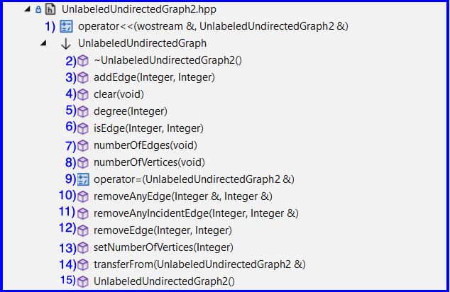
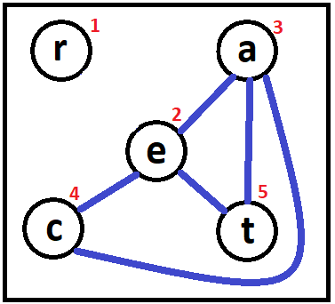
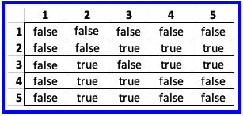

- 1) In the folder csse373devenv202x30-yourID/components/include/UnlabeledUndirectedGraph create UnlabeledUndirectedGraph2.hpp
- 2) In UnlabeledUndirectedGraph2.hpp implement class UnlabeledUndirectedGraph2
- 3) You must:
- Implement UnlabeledUndirectedGraph2 using an adjacency matrix - see Figure 1 for an example
You may also add additional representation variables in order to achieve better performance for some of the exported operations, i.e., utilize the engineering technique "a space for time trade-off"
- Use a layered implementation by layering on the PartitionableArray1 component and its corresponding PartitionableArrayChecking1 component
- Implement all 15 methods - see Figure 2
- Use C++'s conditional compilation and use PartitionableArrayChecking1 in Debug Mode and only PartitionableArray1 when in Release mode
- Big-O requirements on implementing the following graph operations: removeAnyIncidentEdge, removeAnyEdge, and degree
- These 3 graph operations must leverage the power of PartitionableArray1 in order to make all 3 execute in O(1) time
- The PartitionableArray operations that will make O(1) performance possible are:
numberOfInterestingEntries, giveIndexOfInterestingEntry, numberOfUninterestingEntries, giveIndexOfUninterestingEntry
- See the PartitionableArray Usage link above for details
- Note: you will implement removeAnyIncidentEdge and removeAnyEdge by leveraging PartitionableArray1 methods, that will have a good chance of making your operator << display values of edges in a different order than you expect. So be sure to double check that operator << works according to the requirements set forth in the next bullet point
- Requirements on implementing operator <<
I recommend that you start with the implementation found in UnlabeledUndirectedGraph1.hpp
Then make sure operator << meets the following criteria:
- A graph variable must be displayed using its abstract mathematical model. If you are unsure how an abstract value looks, in your repo is a project called UUGraphDriver, open it up in VS2022, build it and run it, use it to build a graph and then display it.
- operator << must be a client of UnlabeledUndirectedGraph and call only its operations; it is not allowed to call PartitionableArray's operations
- The vertex set must be displayed in increasing order
- Each edge (which is a set) must be displayed so that the leftmost vertex of the set is <= to the rightmost vertex
- The edge set must be displayed in nondecreasing order based on the leftmost vertex in the set
- When there are two or more edges with the same leftmost vertex, then those edges must be displayed in nondecreasing order by the rightmost vertex
- Include no extra spaces in the displayed value
- For the graph shown in Figure 1, operator << would produce:
({1,2,3,4,5},{{1,2},{1,3},{2,3},{2,4},{2,5},{3,4},{3,5}})
- To test your implementation you might want to use the driver.cpp found in the project named UUGraphDriver (which is in your repo)

Figure 2 |


Figure 1 - Graph g and its adjacency matrix
Note: row #1 has no "interesting" cells
where "interesting" means there exists an edge {row#,col#} |